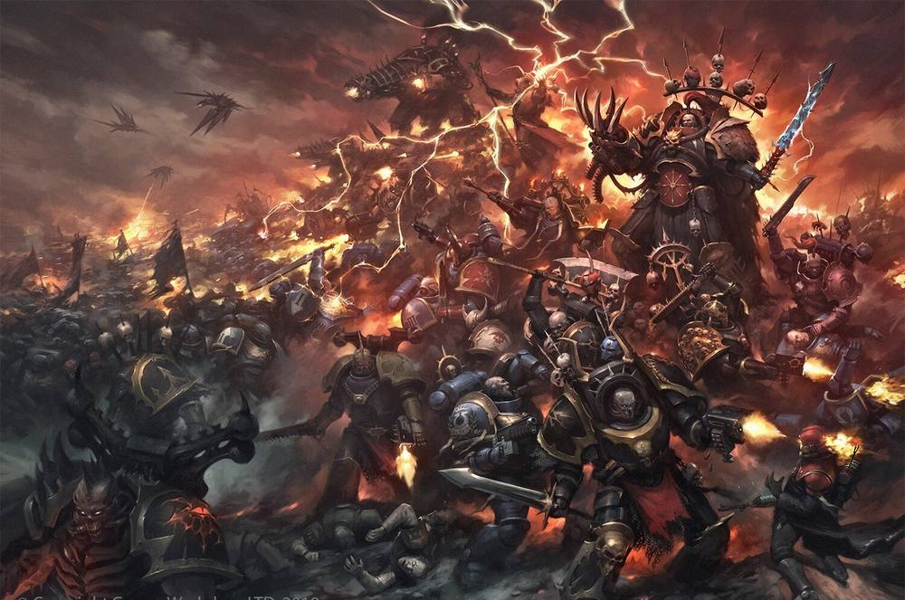
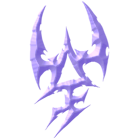
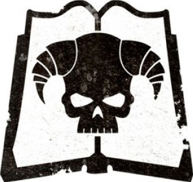
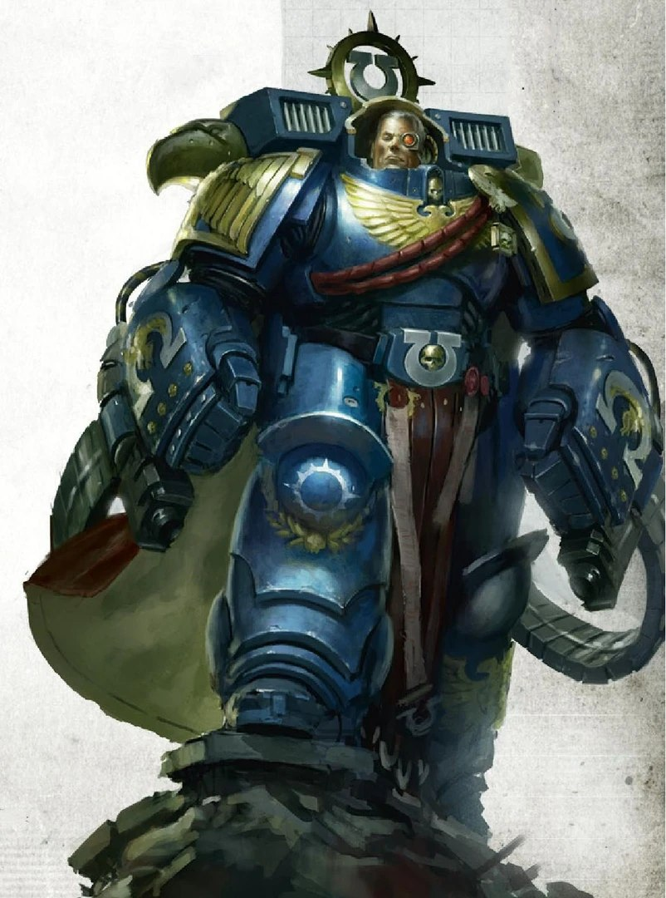

War of Nightmares
| War of Nightmares | |
|---|---|
| Part of the Era Indomitus | |
 | |
| Date | Early M42 (by the Vigilus template, from 0.1 post VCM)[a] |
| Location | Vigilus, Vigilus System, Nachmund Sub-sector, Segmentum Obscurus |
| Result | Imperial strategic victory. Abaddon withdraws; the Nachmund Gauntlet stays open. Vigilus left devastated, with Ork, Genestealer Cult and Chaos forces still on the planet |
| Belligerents | |
| Imperium | Chaos and xenos Aeldari of Saim-Hann Aeldari of Saim-Hann Drukhari of the Kabal of the Black HeartThe xenos fought each other as well as the Imperium |
| Commanders and leaders | |
 Chief Librarian Varro Tigurius | Spiritseer Qelnaris |
| † Killed in action · (WIA) Wounded | |
| Units involved | |
| Wild Riders of Saim-HannKabal of the Black Heart | |
| Strength | |
| Casualties and losses | |
| The Saim-Hann riders destroyed by the Imperial response force | |
| Billions of Vigilant citizens; several hivesprawls burned or overrun, millions of loyalists dying in the fires Calgar ordered | |
The War of Nightmares was the war for Vigilus, a hive world of the Segmentum Obscurus that guards the northern end of the Nachmund Gauntlet, the only known stable passage through the Great Rift. It was fought in the first years of the Era Indomitus. Its first phase, called the War of Beasts, began when an Ork Speedwaaagh! crashed onto the planet and a hidden Genestealer Cult rose in the hives; its second and worst phase, the War of Nightmares proper, began with the arrival of the Black Legion and ended when Abaddon the Despoiler himself came to Vigilus and was driven off.[1][2]
The defence was led by Marneus Calgar, Chapter Master of the Ultramarines, who united the planet's quarrelling authorities, ordered the burning of the hives that had fallen to Chaos, and fought Abaddon in single combat in the palace of Saint's Haven. Calgar was cut down by the daemon sword Drach'nyen, but an Aeldari vessel crippled the Despoiler's flagship and Abaddon withdrew. The Gauntlet remained open, which the Lord Commander's staff count as a victory of the first importance, but Vigilus was left half in ruins and its enemies were never cleared from it.[1][3]
Background
[edit]Vigilus
[edit]
Vigilus is a dry world of continent-sized hivesprawls separated by wastes, with a population before the war of about 167 billion. It had long been a sentinel world of the Segmentum Obscurus, a garrison and staging post behind the Cadian Gate. Its capital sprawl, Hyperia, held the governor's palace and the Ecclesiarchy stronghold of Saint's Haven. The continent of Megaborealis had been ceded to the forge world of Stygies VIII by an ancient treaty and mined almost bare. Each sprawl was protected by Bastion-class force fields, psychically charged barriers that left any who crossed them comatose.[1]
The Rift and the Gauntlet
[edit]When the Great Rift opened in 999.M41, it seemed that Vigilus would be swallowed. Instead, as the storms settled, the planet was found to be holding them back. A corridor of calm space formed between Vigilus and the distant world of Sangua Terra, on the other side of the Rift: the Nachmund Gauntlet. The cause was later traced to spear-like deposits of blackstone, or noctilith, in the crust of both worlds, polarised by some ancient xenos technology to repel Warp energy and aligned toward each other. Vigilus thus became the gate between the Imperium Sanctus and the Imperium Nihilus, and the Lord Commander declared it vital to the survival of the Imperium.[1][3]
The Rift was visible over Vigilus as a purple scar by day and a monstrous presence by night. The planet's rulers, the Aquiliarian Council, forbade citizens to look at the night sky and imposed strict curfews. The people suffered recurrent nightmares, and the shape of the Rift began to appear in graffiti, mildew stains, birthmarks and the cracks of earthquakes. Sleeplessness and fear produced riots, strikes and assassinations, and drove many citizens into secret cults. It is from these nightmares that the war takes its name.[1]
War of Beasts
[edit]The Speedwaaagh!
[edit]In early M42, soon after the Rift opened, an Ork horde under Speedlord Krooldakka burst out of the Warp and crashed onto the wastes. The force fields at first held the Orks outside the sprawls, and they took to racing across the plains. But the Rift had damaged the fields, and as they failed the Orks broke into the outer districts. The Astra Militarum and Adepta Sororitas garrisons contained them at great cost.[1]
The Pauper Princes
[edit]The Ork assault forced the hand of a Genestealer Cult that had grown in the underhives for some two centuries. This cult, the Pauper Princes, had spread through the nobility and the water-processing works of the Hollows. Its gene-sect, the Claw of the Thirsting Wyrm, rose months before it had planned, sabotaging the sprawls' defences and opening the way for further enemies. Skitarii kill-teams sent to find its source failed. A strike force of the Space Wolves under the Primaris Battle Leader Haldor Icepelt, diverted to Vigilus while on the way to the Stygius Sector, tracked the cult by scent into the ruins of Greigan Hollow and drove it back underground.[1]

The Aeldari
[edit]The Aeldari of Saim-Hann, foreseeing disaster on Vigilus, sent riders to kill a demagogue called Vannadan the Firebrand, who had led thousands of citizens into the service of Chaos. They succeeded, but the Imperial response force took them for enemies and destroyed them. The Spiritseer Qelnaris then attacked the Imperial forces in revenge, and was met by Primaris Ultramarines. Meanwhile the Drukhari Kabal of the Black Heart preyed on refugee ships coming through the Gauntlet, carrying their passengers to Commorragh.[1]

Calgar's command
[edit]In answer to the Aquiliarian Council's call for help, reinforcements came from several Chapters, led by Marneus Calgar and some of the finest officers of the Ultramarines, among them the Chief Librarian Varro Tigurius. Calgar took command of the planet's defence and drew its noble, military and ecclesiastical factions into a single war council. By turning the planet's many enemies against each other, he brought the War of Beasts to a halt.[2][1]

War of Nightmares
[edit]The Worldclaimer
[edit]The second phase began when the Black Legion arrived. Abaddon sent the Raptor lord Haarken Worldclaimer to Vigilus, who announced to its defenders that the world would fall to Chaos within eighty days. Black Legion forces and cultists rose in several sprawls, while on the fringes of the sector Ultramarines fought the Daemonkin, a force of Black Legionaries and daemon engines, at Nemendghast. The Daemonkin were making crowns of noctilith, which Abaddon meant to use to reverse the blackstone of Vigilus and flood it with Warp energy, closing the Gauntlet.[1][4]
The burning of the hives
[edit]As the cults and traitors gained ground, Calgar made the decision for which the war is most remembered. Rather than lose whole hivesprawls to Chaos, he ordered the spires that had fallen to be set alight. The fires consumed the Chaos forces in them, and millions of loyal citizens with them. Imperial accounts defend the order as the only means of saving the planet; some in the Ecclesiarchy have not forgiven it.[1][2]
The duel at Saint's Haven
[edit]At last Abaddon came to Vigilus himself aboard the Vengeful Spirit. Calgar challenged him to single combat in the palace of Saint's Haven. Witnesses record that the Chapter Master struck the Warmaster a blow to the chest that staggered him, but Abaddon cut him down with Drach'nyen. Before the Despoiler could finish him, word came that his flagship was in danger: an Aeldari vessel had struck the Vengeful Spirit and crippled it. Abaddon withdrew in anger. Calgar's Victrix Honour Guard carried their master's broken body from the field. He survived, and later crossed the Rubicon Primaris to become one of the first Chapter Masters remade by Belisarius Cawl's process.[1][2]
Aftermath
[edit]The Imperium celebrated Abaddon's retreat as a miracle, and more regiments were sent through the Gauntlet to exploit it. But Vigilus was never truly saved. The Pauper Princes continued to scheme beneath the hives, Ork Speedwaaagh!s still raced across the wastes, Black Legion forces continued to land, and one by one the planet's neighbours fell silent. The war in the Nachmund region did not end; it widened into the Nachmund Rift War, fought for the worlds of the Gauntlet as a whole, including the knight world of Dharrovar and Sangua Terra itself.[1][5]
Imperial analysts now believe that Abaddon learned on Vigilus what he needed to know about the blackstone. His later alliance with Vashtorr the Arkifane, and the Arks of Omen campaign that followed, began soon after.[4]
Legacy
[edit]The War of Nightmares is studied in the Officio Militaris as an example of a defence against several enemies at once, and the Vigilus template for dating has been adopted across many war zones of the Rift. Calgar's burning of the hives remains a matter of dispute among Imperial moralists, and his defeat by Abaddon is the subject of much debate among the Ultramarines, who are not accustomed to recording the defeat of their Chapter Master.[1][6]
Timeline
[edit]The principal dated events of the war and of the struggle for the Nachmund Gauntlet. Dates within the war are given as the Vigilus template records them, and are approximate.
| Date | Event | Theatre |
|---|---|---|
| 999.M41 | The Great Rift opens; the Nachmund Gauntlet forms between Vigilus and Sangua Terra. | Vigilus System |
| early M42 | An Ork Speedwaaagh! under Krooldakka crashes onto the wastes; the War of Beasts begins.[a] | Vigilus |
| early M42 | The Pauper Princes rise in the hives before their plan is ready; Strike Force Icepelt drives them underground at Greigan Hollow.[a] | Greigan Hollow |
| early M42 | Saim-Hann riders kill Vannadan the Firebrand; the Imperial response force destroys them.[a] | Vigilus |
| early M42 | Calgar takes command of the defence and brings the War of Beasts to a halt.[a] | Hyperia |
| early M42 | Haarken Worldclaimer announces that the world will fall to Chaos within eighty days.[a] | Vigilus |
| early M42 | Ultramarines defeat the Daemonkin at Nemendghast.[a] | Nemendghast |
| early M42 | Calgar orders the burning of the fallen hive spires, consuming Chaos forces and many citizens.[a] | Vigilus hivesprawls |
| early M42 | Abaddon the Despoiler arrives aboard the Vengeful Spirit; Calgar is cut down by Drach'nyen at Saint's Haven.[a] | Saint's Haven |
| early M42 | An Aeldari vessel cripples the Vengeful Spirit; Abaddon withdraws and the Gauntlet stays open.[a] | Vigilus System |
| M42 | Calgar is remade as a Primaris Space Marine by the process of Belisarius Cawl. | Macragge |
| M42 | The war in the Nachmund region widens into the Nachmund Rift War. | Nachmund Sub-sector |
| c. 025.M42 | Some reports extend the later fighting on Vigilus to this year.[a] | Vigilus |
See also
[edit]Notes
[edit]References
[edit]- ^ a b c d e f g h i j k l m n The Vigilus Template: Records of the Nachmund War Zone (M42). Officio Militaris.
- ^ a b c d Tigurius, Varro (M42). Dispatches of the Lord Defender of Vigilus. Ultramarines Chapter archive, Macragge.
- ^ a b Records of the Indomitus Crusade (ongoing). Office of the Lord Commander.
- ^ a b The Despoiler's Designs in the Era Indomitus (M42). Ordo Malleus (sealed).
- ^ The Nachmund Rift War (M42). Officio Militaris.
- ^ Chronicle of the Noctis Aeterna and the Chronostrife (M42). Logos Historica Verita, Terra.